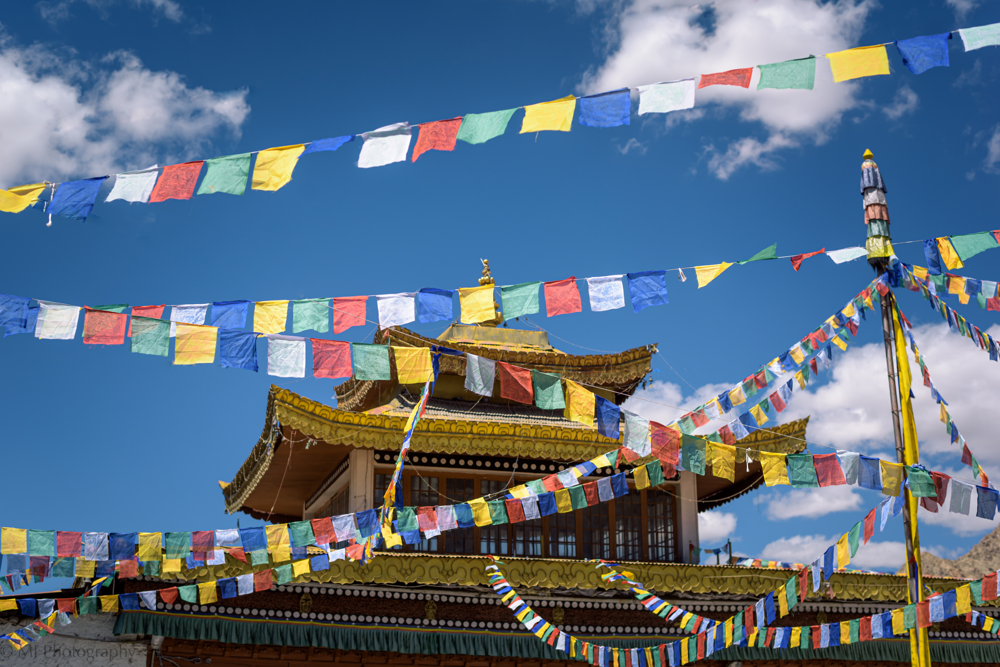
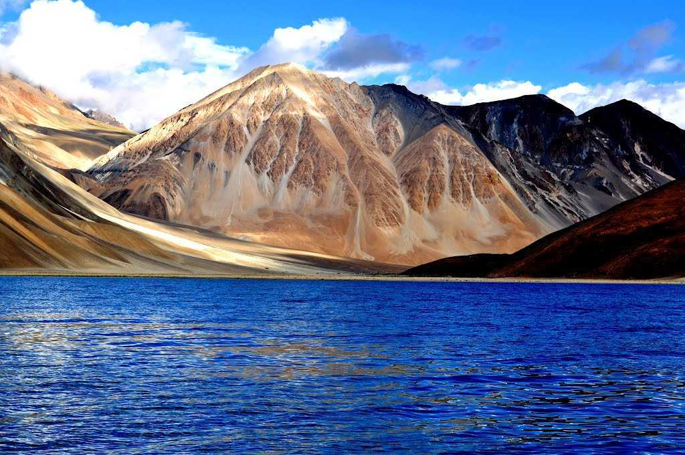
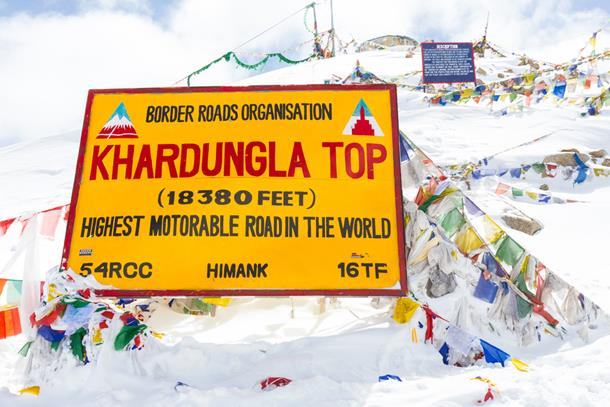

We enjoy the slow and peaceful breakfasts, the long walks, the new experiences, places, people and memories. They make us feel happy we are alive. No wonder! Travelling seems to combine most of the habits of healthy people.
There are many reasons why humans have loved to travel over the centuries. From discovering new lands to interacting with different peoples, travel really does broaden the mind.
But just don’t take our word for it.
We’ve pulled together 50 of the best travel quotes, from some of the greatest thinkers and explorers, which are bound to give you a serious case of wanderlust.
"Travel makes one modest, you see what a tiny place you occupy in the world."
- Gustave Flaubert
Just pack your bags and I will tell you what's best for You
Hey!! Wanna Travel North India, Then Just Check out These Places
Ladakh is a region administered by India as a union territory, and constituting a part of the larger Kashmir region, which has been the subject of dispute between India, Pakistan, and China since 1947. It is bordered by the Tibet Autonomous Region to the east, the Indian state of Himachal Pradesh to the south, both the Indian union territory of Jammu and Kashmir and the Pakistan-administered Gilgit-Baltistan to the west, and the southwest corner of Xinjiang across the Karakoram Pass in the far north. It extends from the Siachen Glacier in the Karakoram range to the north to the main Great Himalayas to the south. The eastern end, consisting of the uninhabited Aksai Chin plains, is claimed by the Indian Government as part of Ladakh, and has been under Chinese control since 1962. Until 2019, Ladakh was a region of the state of Jammu and Kashmir. In August 2019, the Parliament of India passed an act by which Ladakh became a union territory on 31 October 2019.
In the past Ladakh gained importance from its strategic location at the crossroads of important trade routes, but since the Chinese authorities closed the borders between Tibet Autonomous Region and Ladakh in the 1960s, international trade has dwindled except for tourism. Since 1974, the Government of India has successfully encouraged tourism in Ladakh. Since Ladakh is a part of the strategically important Kashmir region, the Indian military maintains a strong presence in the region.
The largest town in Ladakh is Leh, followed by Kargil, each of which headquarters a district.The Leh district contains the Indus, Shyok and Nubra river valleys. The Kargil district contains the Suru, Dras and Zanskar river valleys. The main populated regions are the river valleys, but the mountain slopes also support the pastoral Changpa nomads. In contrast to the neighbouring Jammu and Kashmir, Ladakh has a non-Muslim majority. The main religious groups in the region are Muslims (mainly Shia) (46%), Tibetan Buddhists (40%), Hindus (12%) and others (2%). Ladakh is one of the most sparsely populated regions in India. As its culture and history are closely related to that of Tibet, it is known as the "Little Tibet".

The Land of High Passes, Ladakh, the newly created Union Territory in India (previously a part of Jammu & Kashmir), boasts a landscape that can leave you with your jaws dropped. It is a place where the landscape changes dramatically; it is truly astonishing to see the mountains, snow, cold desert, alpine meadows and lakes at a short distance from each other. Tourism in Ladakh is an absolute delight for nature lovers as well as adventurers.
Adorned with the lofty barren mountains, Ladakh is home to some of the highest motorable passes like Khardung La (5359 m), Marsimik La (5582 m), and Chang La (5360 m), and alpine lakes like Pangong Tso (4350 m) and Tso Moriri (4522 m). Ladakh is further divided into three regions - Leh, Nubra, and Zanskar, and each region has several places to see.
Ladakh is majorly popular amongst the adventurers who feel welcomed by the number of adrenaline rushing activities offered here. The union territory is amongst the top trekking destinations in India with amazing and unmatched treks like the popular Frozen River Trek/Chadar Trek. Ladakh also has opportunities for mountaineering, motor biking, mountain biking, white water rafting and more.
Adding to its exceptional beauty are the ancient Buddhist monasteries that are mostly nestled in the mountains and are thousands of years old. These monasteries make for the Buddhist pilgrimage destinations in Ladakh and also act as important cultural centres where major religious festivals take place.
What's best in Leh & Ladakh
Here are top visited places to travel in Ladakh
Pangong Tso, Leh Ladakh Overview
The most popular tourist attraction in Ladakh, Pangong lake is an endorheic (landlocked) lake situated at 4350 meters. Also known as Pangong Tso, it is 12 kilometres long and extends from India to Tibet. Almost 60% of Pangong Lake lies in the Tibetan Autonomous Region. A unique feature of the lake is that it does not remain blue throughout the year or even the day, rather it changes colours from azure to light blue to green and grey too! It is famous amongst tourists as the spot where the Bollywood movie "3 Idiots" was shot.
Since the enthralling Pangong Lake falls on the Sino-Indian Actual Line of Control, an inner line permit is required to visit it. The Indian Nationals can easily obtain individual permits while other foreign nationals need to obtain a group permit, with at least 3 persons in the group, accompanied by an accredited guide. The permit can be obtained at the tourist office in Leh, for a small fee. Owing to its altitude, the Pangong Lake temperature ranges from -5°C to 10°C as a result of which it freezes completely during winters in spite of its salinity.

Pangong Tso or Pangong Lake; Chinese: 班公错, Pinyin: Bān gōng cuò, Hindi: पैंगोंग झील) is an endorheic lake spanning eastern Ladakh and West Tibet situated at an elevation of 4,225 m (13,862 ft). It is 134 km (83 mi) long and divided into five sublakes, called Pangong Tso, Tso Nyak, Rum Tso (twin lakes) and Nyak Tso. Approximately 50% of the length of the overall lake lies within Tibet, 40% in Ladakh and the rest is disputed but controlled by China. The lake is 5 km (3.1 mi) wide at its broadest point. All together it covers 604 km2. During winter the lake freezes completely, despite being saline water. It has a land-locked basin separated from the Indus River basin by a small elevated ridge, but is believed to have been part of the latter in prehistoric times.
Magnetic Hill, Leh Ladakh Overview
The popular Magnetic Hill of Ladakh is a cyclops hill where vehicles defy the force of gravity and move upwards on the hill when parked at the marked location. To experience this phenomenon, park the car in the neutral gear in the yellow box marked a few metres ahead of the Magnetic Hill road. From this point, the car starts moving at a speed of 20kmph.
Even though there are some myths regarding the mysterious magnetic hill, the fact is that the layout of the area and the surrounding hills give it an optical illusion. The downhill road appears to be an uphill road which leads to the car slowly gaining momentum which appears to be going uphill against gravity when infact it is rolling downhill.
The hill lies at a distance of 30 km from the town of Leh on the Leh-Kargil highway, at an elevation of around 14,000 feet above sea level. It is one of the major tourist attractions and an almost essential stopover for all those who travel to Ladakh. An optical illusion or actuality, the Magnetic Hill in Ladakh has mysterious magnetic properties that draw tourists from across the globe.
Magnet Hill is a "Cyclops hill" located near Leh in Ladakh, India. The layout of the area and surrounding slopes create the optical illusion of a hill. The hill road is actually a downhill road. Objects and cars on the hill road may appear to roll uphill in defiance of gravity when they are, in fact, rolling downhill. It is 7.5 km southeast of Nimmoo and 26.5 km west of Leh on Srinagar-Ladakh road.
Khardung La, also known as Khardzong La, is a high mountain pass in Ladakh region of Jammu and Kashmir, near Leh. It serves as the gateway to Shyok and Nubra Valley. Khardung La is popular as the highest motorable road in India at an elevation of 5602 metres. However, contrary to the belief, its actual elevation is 5359 metres making Dungri La the highest motorable road pass in India.
Khardung La pass is a perfect getaway for adventure enthusiasts, peace seekers and mountain biking aficionados. An Inner Line Permit is required by the tourists to enter the pass and travel through it. Due to heavy rains and snowfall, the Khardung La pass remains closed from October to May.
Khardung La was built in 1976 and was opened for public in 1988. The pass is very important for India as it is used to carry supplies to Siachen glacier. From the top, you can get picturesque views of the Karakoram range and the Himalayas.

Khardung La (Khardung Pass, la means pass in Tibetan) is a mountain pass in the Leh district of the Indian union territory of Ladakh. The local pronunciation is "Khardong La" or "Khardzong La" but, as with most names in Ladakh, the romanised spelling varies.
The pass on the Ladakh Range is north of Leh and is the gateway to the Shyok and Nubra valleys. The Siachen Glacier lies part way up the latter valley. Built in 1976, it was opened to public motor vehicles in 1988. Maintained by the Border Roads Organisation, the pass is strategically important to India as it is used to carry supplies to the Siachen Glacier.
The elevation of Khardung La is 5,359 m (17,582 ft). Local summit signs and dozens of stores selling shirts in Leh incorrectly claim that its elevation is in the vicinity of 5,602 m (18,379 ft) and that it is the world's highest motorable pass. Two air warriors of India Air Force Wg Cdr Gajanand Yadava and WO AK Tiwari undertook heighest skydive landing at this pass on 8 Oct 20 and made a new record.
"Town near the Line of Control"
Usually a stopover for people travelling towards Leh or Padum, Kargil is a tourist hotspot that's small enough to be explored by wayfaring. Situated close to the line of control, Kargil is also a volatile region, owing to the terrorism prevalent from the other side of the LOC. However, apart from its glorious past, bestowed with natural beauty and adventure, Kargil is the place to be for intrepid travellers.
t is the home to the famed Nun Kun Peaks and has excellent potential for skiing, mountaineering and trekking. Kargil rests on the banks of River Suru and also offers unique opportunities for river rafting. An amalgamation of Buddhist and Turkish architecture, Kargil has a rich history dating back to the 16th century.
It is nestled at an altitude of 2704 metres above sea level and offer exemplary views of the Himalayan Ranges. Apart from tourism, this region is also known as an essential centre for trade and commerce. Dotted with apricot farms, Kargil is one of the largest producers of apricots in India. Sumptuous food and warm locals are the highlights of this town. Hence, sampling the local delicacies is one of the best experiences in Kargil.
Kargil is a town in Kargil district and the joint capital of the Indian union territory of Ladakh. Kargil is the second largest town in Ladakh after Leh. It is located 204 km to the east of Srinagar and 234 km west of Leh to the east. Kargil is the centre of the Suru River valley, historically known as Purig.
If we travel simply to indulge ourselves
we are missing some of the greatest lessons life has to offer.